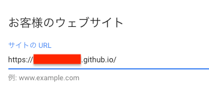
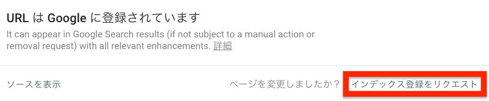

【2018年9月22日合格】Googleアドセンス審査は厳しくない｜無料ドメインでも合格するヒントをご紹介
GoogleAdsenceに申請したけど返事が帰ってこない。本当に審査しているの？待ってる間は何をすればいいの？

といった人に向けて記事を書いていきます。
記事が役立つ人
- Googleアドセンスを知らない人
- アドセンス審査が長くて焦っている人
- Googleアドセンスの難易度を知りたい人
記事内コンテンツ
Googleアドセンスの審査は有料の独自ドメインしか無理？
今は無料ブログ等のサブドメイン（https://○○.○○.○○.jpのような「.」が3つ以上つくアドレス）では申請自体が出来なくなっています。
確認の為に無料で作ったwordpressのサイトURLを入力してみました。すると、やっぱりダメ、、、
サブドメインでは申請できない、、、
でも「git hub pages」というシステムでWebサイトを作れば申請できます。（完全無料です）
git hub pagesで申請可能！
このシステムでブログを作ると「https://○○.github.io」(○○は自分で名前を付けられる)という形のドメインを取得できるんですが、このドメインはアドセンスに申請できます。
詳しいシステムの利用方法は『無料で使える！GitHub Pagesを使ってWebページを公開する方法』にプロの方が載せてくれているので、参考にしてみて下さい。
結論：完全無料でもGoogleAdSenseに申請できる。
Googleアドセンスの審査期間は？
気になる審査期間は以下のとおり。
■申請日が9月4日
Webサイトをリンクする案内がきます

■合格日が9月22日
やっと合格！！！
合計審期間：18日
毎日AdSenseと睨めっこしても「アカウントの有効化」画面から全く変化が無かったので焦りました、、、
「全然できてないのに申請しやがって！」なんて見放されたかと思いましたよ、、、
でもGoogleはしっかりと審査してくれていたので、同じ状態の人も気にしなくていいと思います。
結論：大体1ヶ月みておけば大丈夫
Googleアドセンスの審査に合格した時のブログのボリューム
一番気になるところだと思います。ふざけてるのか！と言われそうなボリュームですが怒らないでほしいです、、、
記事数は？
たったの8記事でした。
「あと2ヶ月はかかるだろうな、、、」と思っていたので、合格した時は正直びっくりしました。
20記事～30記事ないと合格できないという噂は完全にデマなので安心していいでしょう。
結論：記事数はそんなに関係ない。
1記事の文字数は？
多い記事で大体3000～5000文字ですが、1000文字に満たない記事だってあります。
他の記事を補足説明するために作成したので文字数が少ないです。（言い訳）なので、最低1000文字ないと合格しないというのも嘘なので安心して下さい。
結論：文字数もそんなに気にしなくていい
更新頻度は？
3日に1度くらいです。構成を考えるのに時間がかかってなかなか更新できません（これまた言い訳）
なので、毎日更新しなくても合格できます。時間がかかっても必死で書けば問題ないです。
結論：魂を込めれば問題ない。
Googleアドセンスの審査では画像を使わないほうが良い？
絶対に嘘です。「BracketsでHTMLを書いていく」この記事を見もらうと分かります。
触ったことがない人に向けてHTMLの説明をする記事ですが、バンバン画像を使ってます。その方が確実に伝わるからです。
文字よりも画像の割合が多いんじゃないかという勢い。なので、合格のために画像をできるだけ使わないようにするのは意味ないです。
記事のクオリティを上げることだけを考えましょう。
結論：画像を使ったほうが伝わるなら、ガンガンつかおう
Googleアドセンスに合格する為にやったこと
合格するのに必要だなと感じた部分を簡単にまとめます。難しくないのでサッとやってしまいましょう。
過去の自分に役立つ記事を書く
役に立つ情報や経験談を書けばボリュームはそんなに意識しなくていいと思います。記事ごとに差があっても問題なしです。具体的に意識する事といえば
「身近な人に向けて書きましょう」ということです。
遠くの知らない人に叫んでも心に響きにくいです。ちなみに僕は「過去の自分」を頭に思い浮かべて書いています。これだと凄くイメージしやすいと思うのですが、どうでしょうか。
身近な人は、なにも他人だけではないです。昔の自分は困ってばかりだったと思うので、それを解決できそうな内容をどんどん記事に書いていきましょう。
Googleアドセンスの合格を勝ち取るには「過去の自分自身」を納得させれば良いだけです。
記事を書く時にオススメの方法も紹介しているので参考にしてみて下さい。
プライバシーポリシーを書く
個人情報やプライバシー情報の取り扱いについて明記したページのことです。
この方の記事をかなり参考にさせてもらいました（http://liberty-life-blog.com/wordpress/privacy-policy/）
プライバシーポリシーは、どのみち必要なので申請した段階で作りだしましょう。
自己紹介ページを書く
詳しく書く必要はないので、自己紹介ページを作っておきましょう。
少しでも自己紹介したほうが信用度もあがると思います。早くカッコいい実績を作りたいです、、、
Googleにインデックス登録依頼する
記事を書いたらすぐグーグルの検索結果に出してもらえるよう「インデックス登録」依頼をしましょう。
Google Search Consoleから依頼できるので登録をオススメします。
⇛【Google Search Consoleの登録方法】※外部ページ
登録が終わったら、作成した記事をGoogleへ登録依頼します。
Search Console上部の検索窓に、登録されているか確認したいページのURLを貼り付けてEnter
URLがGoogle検索結果に出る場合「登録されています」との表示が。
登録されていなかった場合、右下の「インデックス登録をリクエスト」ボタンを押しましょう。問題がなければ2〜3分くらいで登録してくれます。
また、Googleに登録されているかは別の方法でも簡単に調べられます。
検索したいページのURLに「site:」と付けて検索。登録されているとタイトルが表示されます。
モバイルフレンドリーに対応させる
モバイルフレンドリーとは、スマホ（モバイル端末）から見ても問題ないかを判断する基準のことです。PCでは問題なくても、スマホでは大きくレイアウトがくずれているとOUTです。
ワードプレスを使うと問題ないはずなので、ここはHTMLを直打ちして作っている人の項目でしょう。グーグルサーチコンソールで「モバイルフレンドリー対応」しているか確認できるので試してみて下さい。
さきほどGoogleSearch ConsoleでURLを調べた画面に出てくる
まとめ
いかがでしょうか。グーグルアドセンスは、あなたが思っていたより厳しくないです。まだ申請してないなら、今すぐに行動しましょう。
僕は申請してから記事を書き始めましたが問題なく合格できました。恐れる必要はありません。
また、ワードプレスや有料の独自ドメインを使わなくても「git hub pages」を使えば完全無料で申請できるので、いきなりお金をかけたくない場合は試してみるのもいいでしょう。（その分ハードルが少し高い）
それでは、今からアドセンスに申請して淡々と記事を更新し続けてください。
1ヶ月もあれば合格しますので、ドンと構えておきましょう。
記事を書く時にオススメの方法もご紹介しているので、参考にどうぞ。